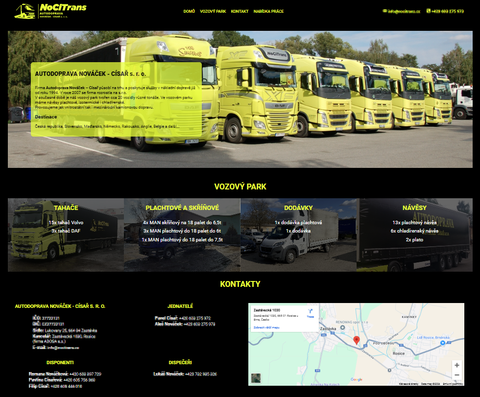
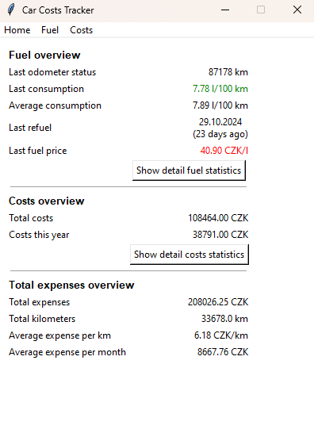
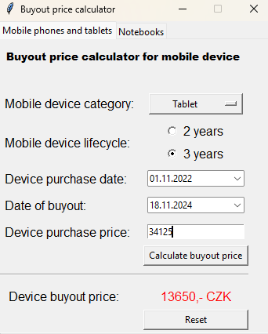
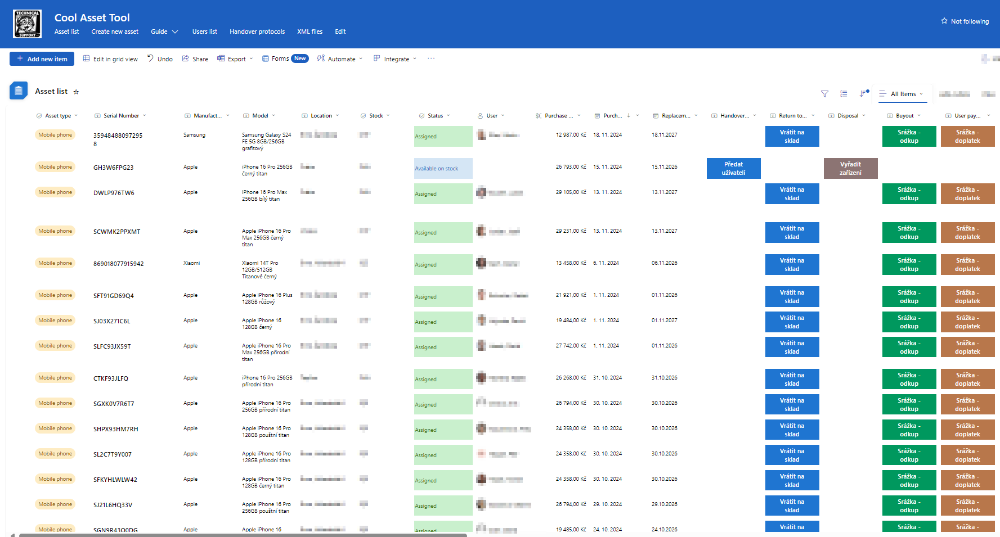

About me
I’m a years old self-taught web developer in progress, located in Czech Republic, driven by a strong passion for software development and technology. My ultimate goal is to transition into a career as a software developer. Currently, I work as an IT Manager, a role I’ve held for nearly three years, after spending several years as an IT Technician. This experience has honed my technical skills and reinforced my ability to manage time and responsibilities effectively.
Beyond my professional life, I’ve been a dedicated volunteer firefighter for over a decade, showcasing my commitment to teamwork, community service, and quick problem-solving under pressure. Combining my technical expertise with my strong organizational skills, I’m eager to bring creativity and innovation to software development projects while continuing to grow and learn in this dynamic field.
Contact me on 


Projects
-
Truck tranport company website
Static porfolio website of truck transport company.
Used technology: HTML, CSS

-
Personal car expenses tracker
Personalized application for tracking car expenses like fuel, service, insurance and other car-realted costs.
Limitation to only one car.Key features: Data persistency in .json file, calculation of statistics
Used technology: Python

-
Buyout price calculator
Simple application for calculation of buyout price for cases when the company is selling used device to the employee.
Corresponding to company internal regulations.Used technology: Python

-
Asset management tool
Asset management tool for in real use in company. Fitting to company needs and internal regulations.
Tracking almost 5000 assets.Key features:
- Action buttons with automated flows and user input for asset operations
- Electronic handover protocols using Microsoft Approvals with generating PDF protocols sending to user´s e-mail
- Dynamic calculation of device attributes like age, buyout price etc.
- Connection to other internally used tools
Used technology: LowCode/NoCode solution - Microsoft Sharepoint, Microsoft Power Automate, Microsoft Approvals

Skills
- HTML
- CSS
- JavaScript
- Python
- GIT
- GitHub
- Microsoft 365
- Microsoft PowerAutomate
- JavaScript
- Network
- Active Directory
- Project Management
- IT Management